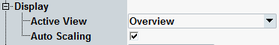

Display Settings
Use the hotkeys associated with the "Display" softkey to enable and scale the diagrams, and select the trace types to be displayed.

Bluetooth display settings
Selects the diagram type to be displayed.
Remote command:Activates the "Auto Scaling" function for the active view. No remote control is provided.